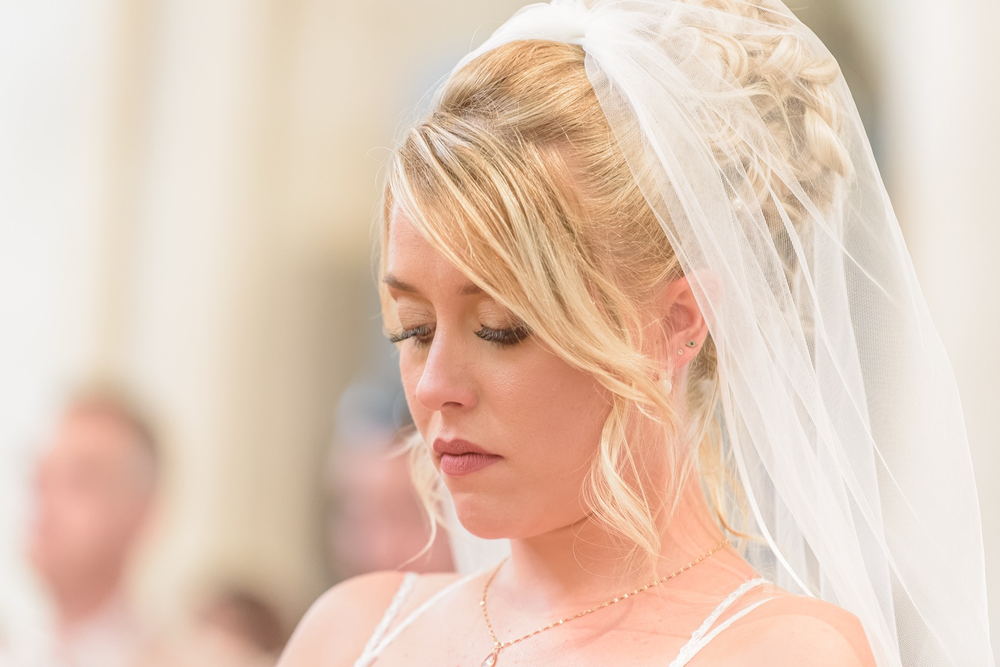
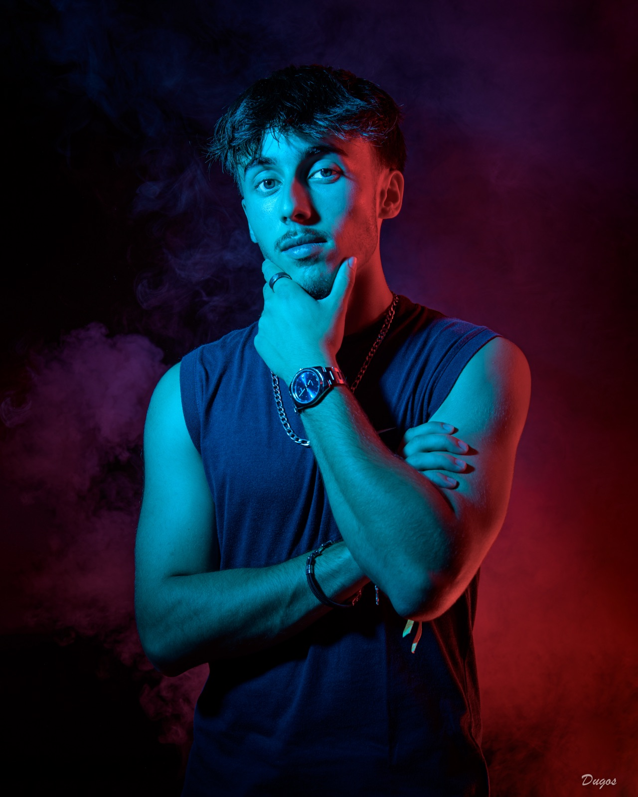
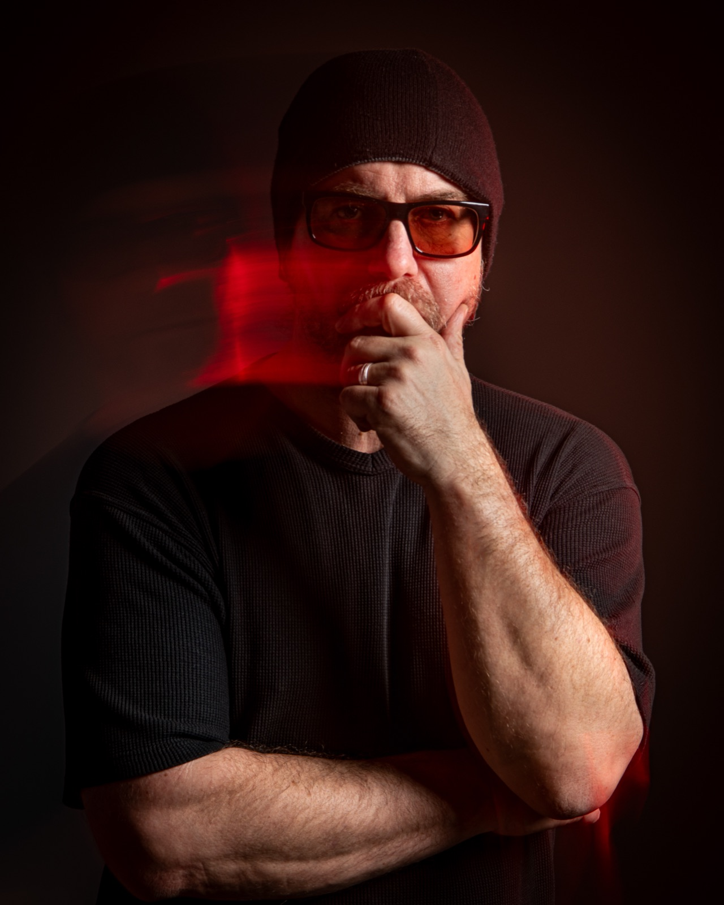
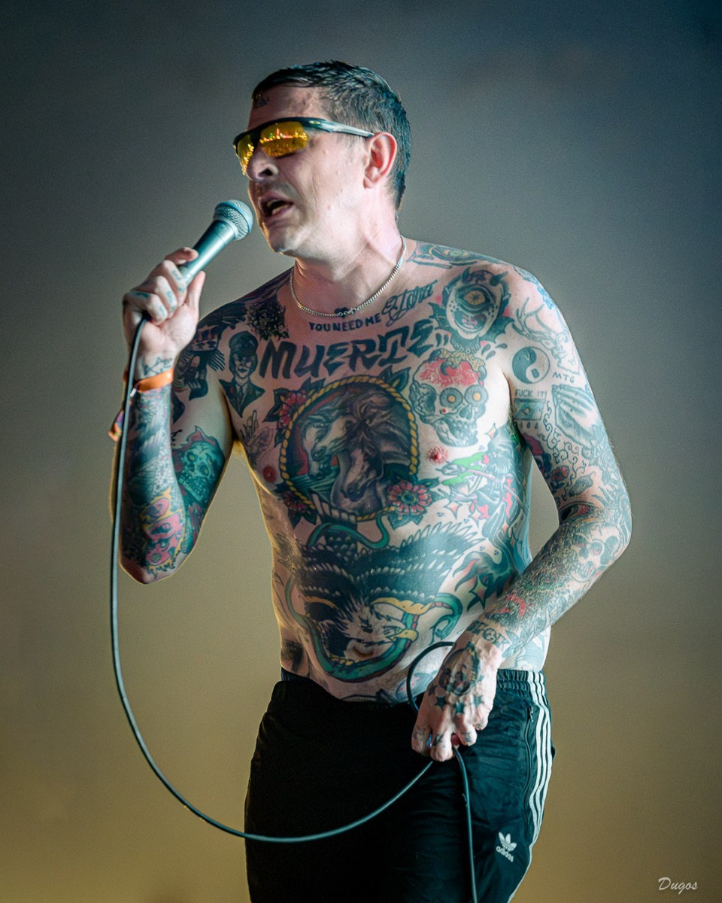
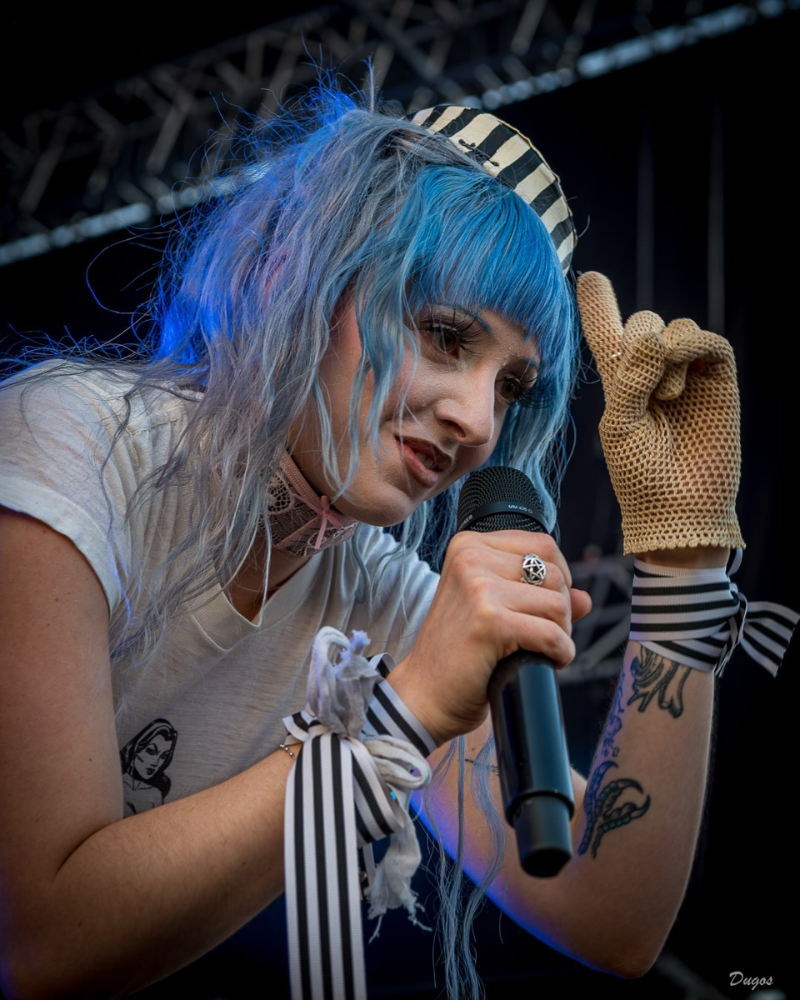
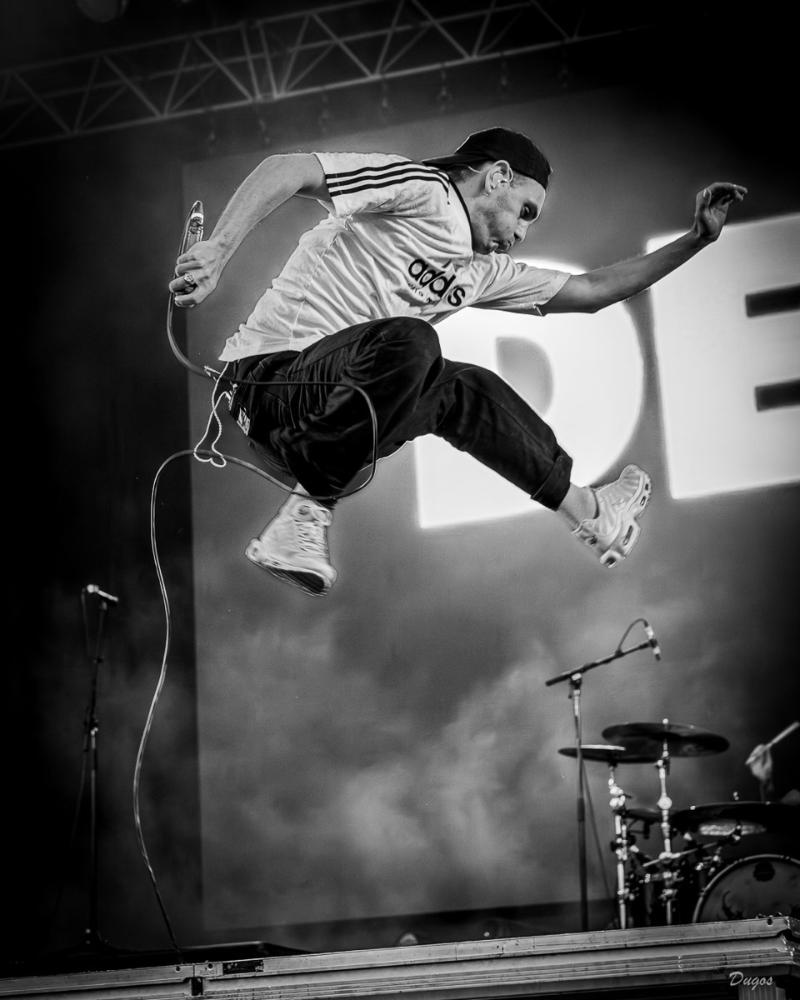
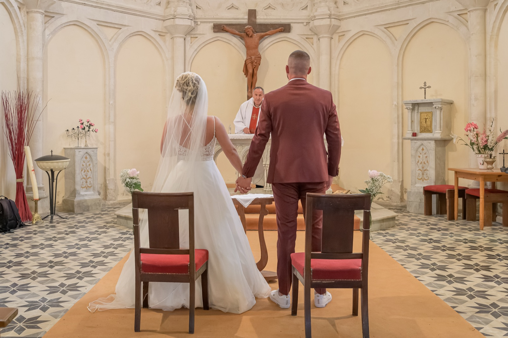

“The expression
of a face,
the emotion
of a moment.”



It all began with a digital SLR and the discovery of manual mode: the chance to take complete control of the image. Self-taught, I have been working as a professional photographer since 2021, mainly in weddings, portraits and concerts.
Based in Caumont-sur-Garonne, in the heart of Lot-et-Garonne, I work throughout the département and in the southern Gironde.
“Dare to step in front of my lens. But be warned: you might get a taste for it!”
- Music first: I was a guitarist and singer in various rock bands for twenty years.
- Today I'm on the other side of the stage, camera in hand.
- Accredited photographer at the Garorock festival, where I experience concerts right alongside the artists.
- A style in three words: spontaneous, natural, creative.
- One conviction: the more relaxed the atmosphere, the better the photos.




Authenticity
No forced staging: it is the subject's expression and the emotion that comes through that guide my eye.
Empathy
Beyond technique, listening and connection. Feeling at ease in front of the lens changes everything.
Pride
My goal: for everyone to be proud of the image they project.
We talk.
Before any session, we take the time to discuss everyone's expectations and get to know each other.
We get comfortable.
No stiff poses: we create an atmosphere, a rapport. The more relaxed the mood, the better the photos.
We capture it.
Spontaneous, natural, creative images. Photos you will be proud of.